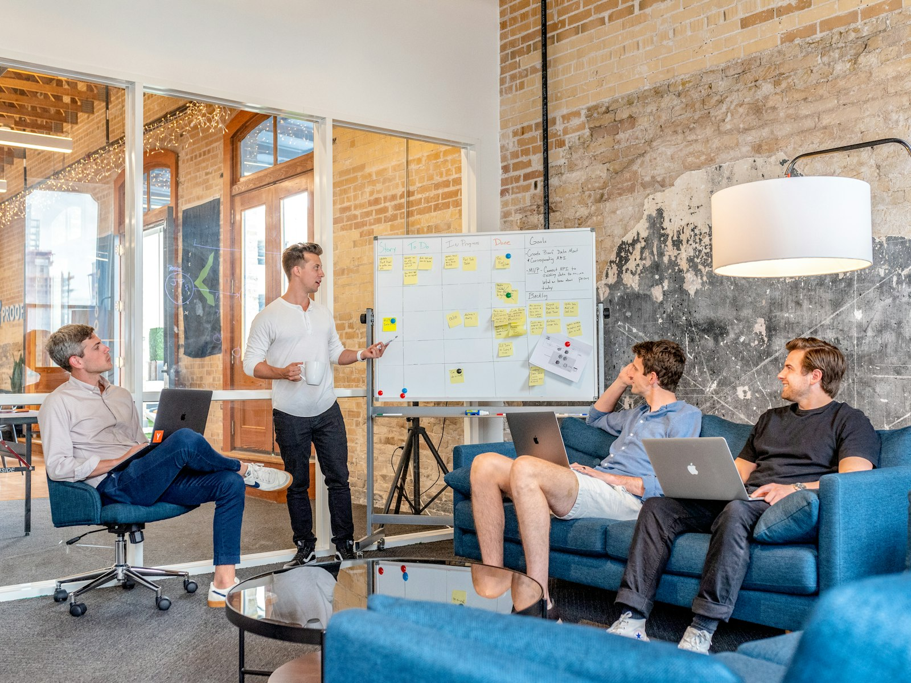

FOUNDER & CEO
Ashvak Sheik
Client outcomes, technology strategy, and delivery leadership.
About ASH IT
Founded in 2020, we bring grounded delivery discipline to the AI, data, automation, and cloud systems organizations need now.

Our point of view
ASH IT Consulting Inc. is an Ontario-based technology consulting firm and member of the Microsoft AI Cloud Partner Program. We provide Microsoft Azure, Microsoft 365, Power Platform, Power BI, Microsoft Fabric, data engineering, automation, cloud migration, custom software development, quality assurance and IT consulting services to Canadian organizations.
We work across Canada, the United States, and Europe, with a delivery team in Hyderabad that extends our ability to deliver with speed and depth.
Meet us on a project →Partnership
As a member of the Microsoft AI Cloud Partner Program, ASH IT helps organizations connect Microsoft technologies into practical, secure operating advantage.
View our Microsoft Marketplace profile ↗Five core disciplines
Our team brings the strategic, technical, and quality capabilities needed to turn a defined need into a dependable business system.
Client outcomes, technology strategy, and delivery leadership.
Applied AI, agents, and workflow design.
Azure, Microsoft 365, and Power Platform.
Fabric, Power BI, pipelines, and data engineering.
Software development, QA, and operational readiness.
Good work starts well
We are ready to help you frame the opportunity and make the right move.